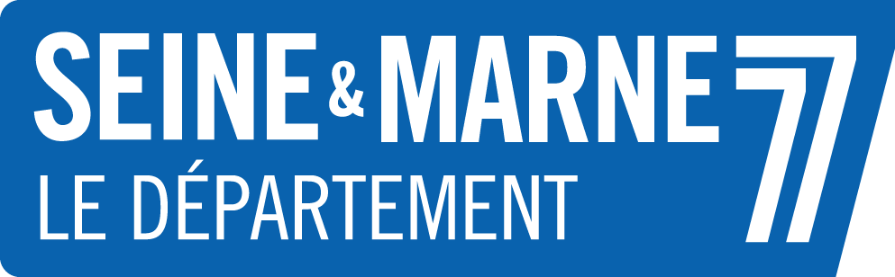
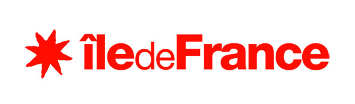
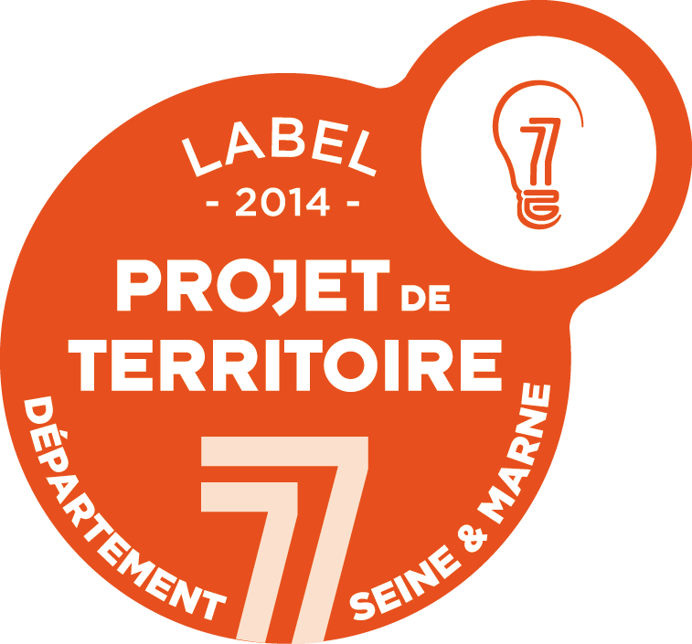
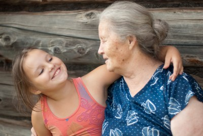
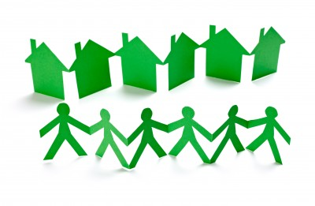
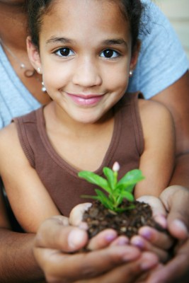
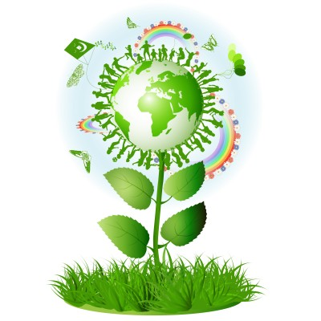

PROJET pour tous: femme, homme, couple tous âges confondus, avec ou sans enfants
Le projet EDEN avance ...
Les réunions collectives ont commencé depuis novembre 2013, à raison d'une toutes les 2-3 semaines.
Nous sommes actuellement 7 foyers et avons quelques pistes de lieux (situées sur le Sud 77).
vous pouvez aussi trouver des infos sur
la page facebook du projet EDEN, et n'hesitez pas à "liker"
Projet soutenu par:


Projet labellié "projet du territoire" par le CG77 :

Presentation générale du projet
A l'origine du projet, ...
*de nombreux constats :
- La demande de structures d'accueil petite enfance en zone rurale et semi-rurale
(une micro-crèche était prévue à l'origine du projet),
- L'isolement des personnes seules, retraitées ou non, en ville et dans les campagnes,
- Le besoin de se loger (en tant que locataire ou propriétaire),
- La recherche d'une vie autre que celle proposée par les villes,
- L'importance de l'entraide et des liens sociaux.
* La visite du Hameau des Buis en Ardèche, un lieu magique, comprenant un habitat groupé et une école.
La solution et l'idée : Créer un lieu semblable en Seine et Marne, en zone rurale
regroupant sur un même lieu un habitat groupé
et des activités économiques et culturelles Autres appellations pour l'habitat groupé :


habitat participatif
habitat collectif
habitat coopératif ou coopérative d'habitants
éco-habitat / éco-quartier / éco-hameau
Le but

Rapprocher les générations,
Favoriser l'entraide intérgénérationnelle,
Vivre ensemble tout en gardant des espaces privatifs,
Contribuer à retrouver des valeurs de solidarité,
Respecter la nature avec une logique de développement durable,
Faire de ce projet un lieu servant d'exemple et duplicable sur d'autres territoires.
POURQUOI LE NOM D'E.D.E.N. ?

4 lettres pour résumer les valeurs portées par le projet!
E comme : Ensemble
D comme : Développement Durable
E comme : Enfance
N comme : Nature
Pourquoi ces valeurs sont-elles importantes ?
L'environnement , l'écologie, le développement durable, la nature :
Aujourd'hui, on détruit tout, on jette tout sans se poser de questions sur les conséquences de nos actes
sur la planète. Que restera-t-il à nos enfants ? De quelle terre vont-ils hériter ?
Nous devons faire attention à ce que nous faisons, chaque geste peut être utile pour préserver
ce que nous offrent la nature et la terre, car sinon demain, notre planète sera une décharge
et plus rien ne poussera.
L'entraide intergénérationnelle :
Si nous sommes attentifs aux personnes seules autour de nous, nous constatons combien il est simple de leur donner un coup de main. Nous avons beaucoup à apprenre de nos ainés et ils ont baucoup à donner.
Chacun peut apporter à l'autre ce qui lui manque.
Les enfants :
Imaginons un monde sans enfants, quelle tristresse .... pour nous tous adultes.
Les enfants nous apportent beaucoup, ils sont source de dynamisme et d'énergie, ils nous obligent à nous remettre en question, à réfléchir.
Les enfants ne sont-ils pas notre devenir et notre méditation ?
Mais notre rôle est aussi de leur enseigner ce que nous savons, de leur transmettre notre savoir
et notre connaissance.
La nature :
Elle doit être au coeur de nos préoccupations et nous devons vivre en harmonie avec elle.